Problem
Traditional attendance systems are prone to proxy attendance, manual errors, and lack real-time visibility for teachers and parents, leading to unreliable records.
Solution
Designed clean and intuitive mobile UI mockups for a face recognition-based attendance system. The interface focuses on clarity, ease of check-in, and seamless navigation, while visually supporting real-time notifications and attendance tracking features to enhance user trust and usability.
About Project
Smart Presensee Mobile is a UI/UX design project for a Flutter-based mobile attendance application. The design focuses on delivering a seamless experience for students to mark attendance via face recognition, view their attendance history, and manage schedules — all within an intuitive mobile interface.
Screen Design
The user interface is designed with a focus on simplicity and ease of use on mobile devices. Below is the complete visual design of all screens, showcasing the core flows and interactive elements.
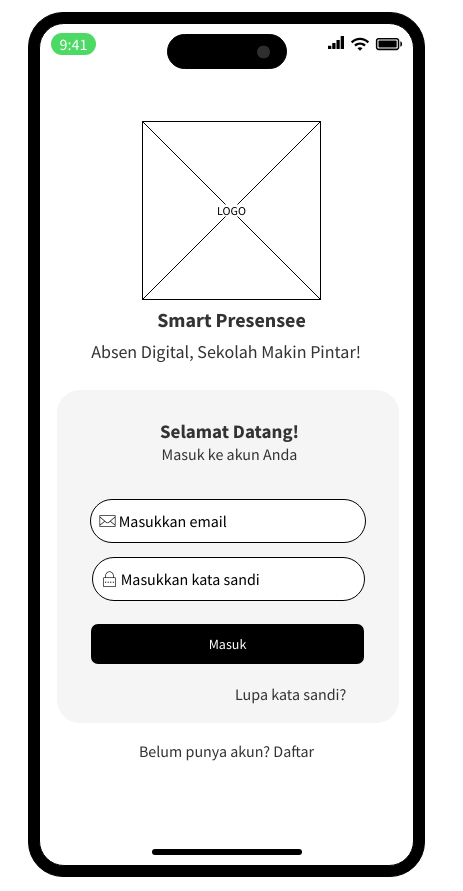
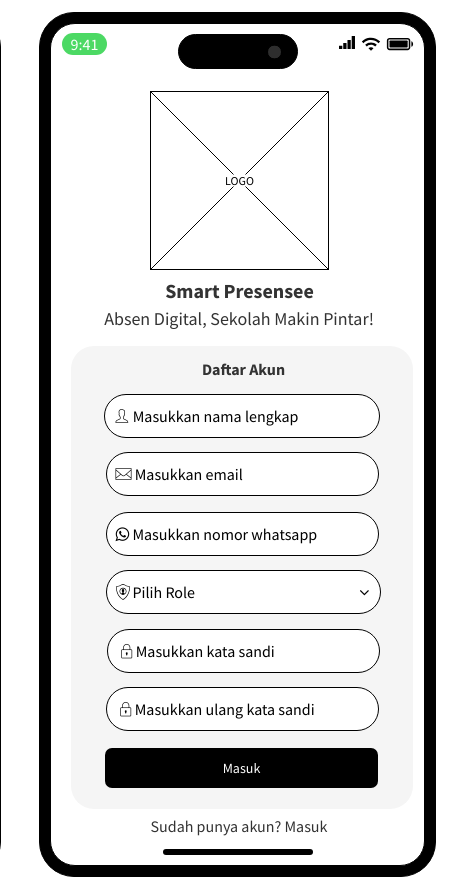
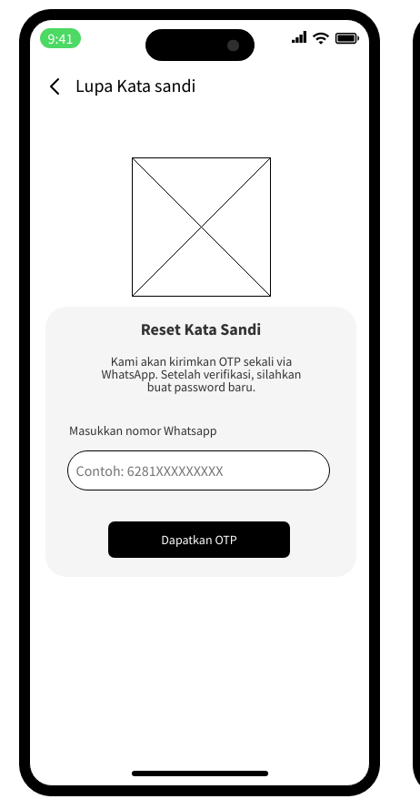
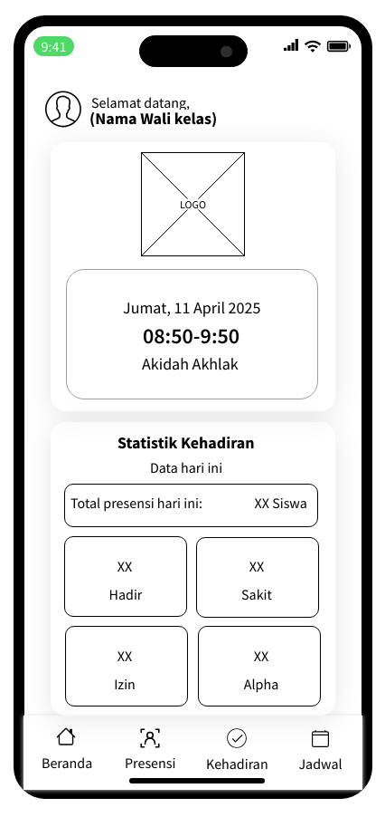
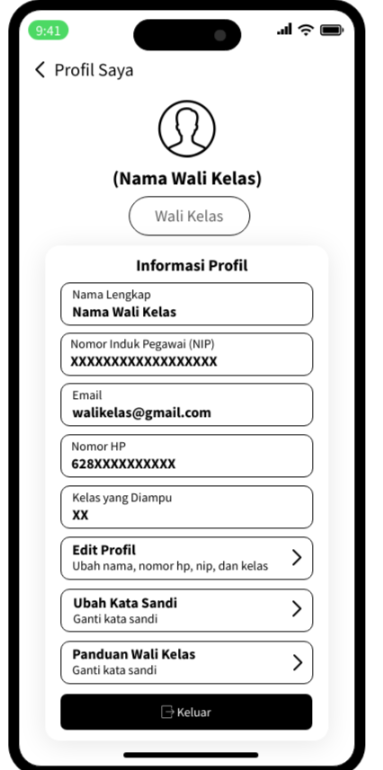
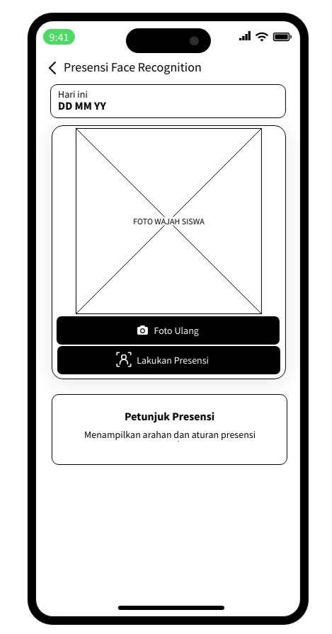
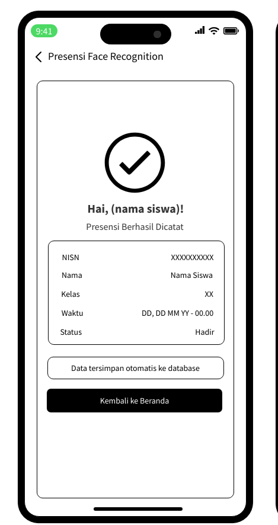
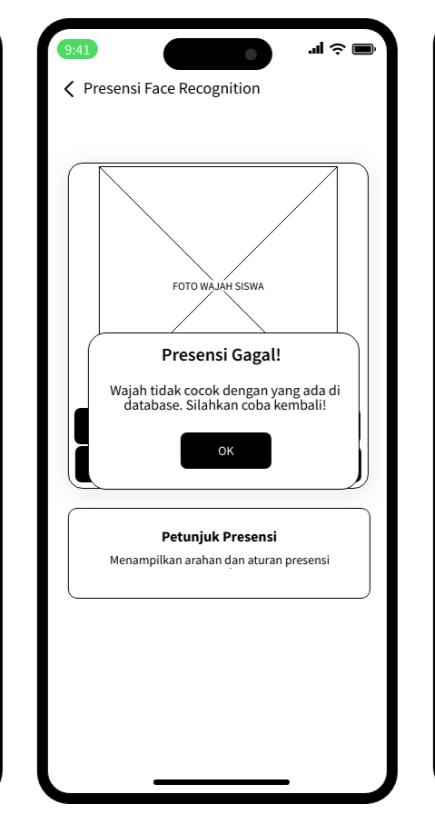
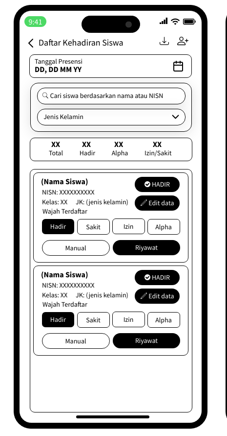
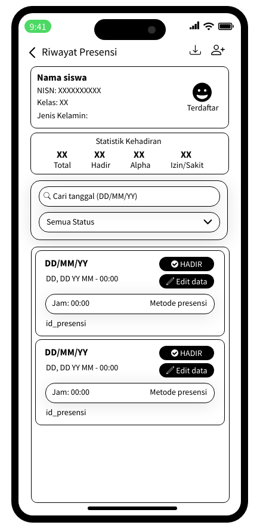
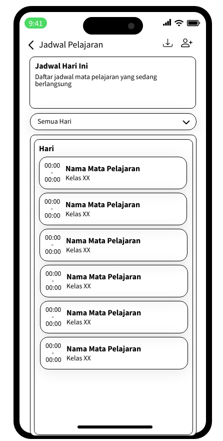
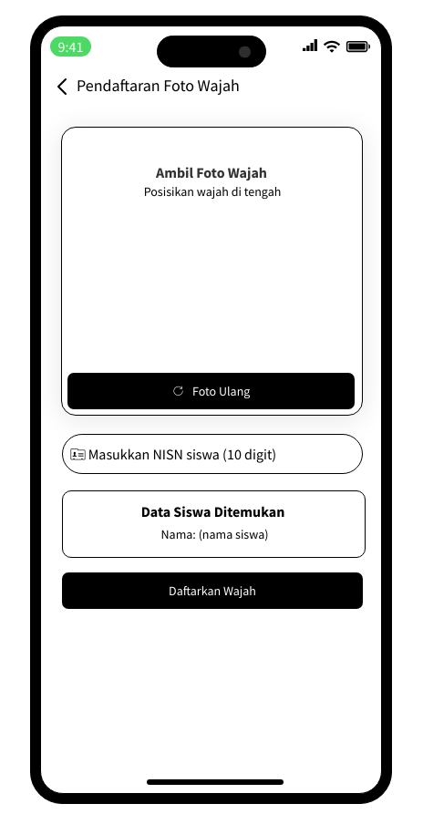
Core Features
Face Recognition Attendance
Students mark attendance using real-time face recognition to prevent proxy and ensure accuracy.
Dashboard Overview
A clean home screen displaying daily attendance summaries, class schedules, and quick access to attendance features for homeroom teachers.
Attendance Record
Homeroom teachers can view and manage complete student attendance records with date filters and status indicators.
Schedule Management
Weekly class schedules are available to help homeroom teachers track sessions and attendance requirements.
Student & Face Data Management
Homeroom teachers can manage student profiles and register students’ face data for the recognition system.